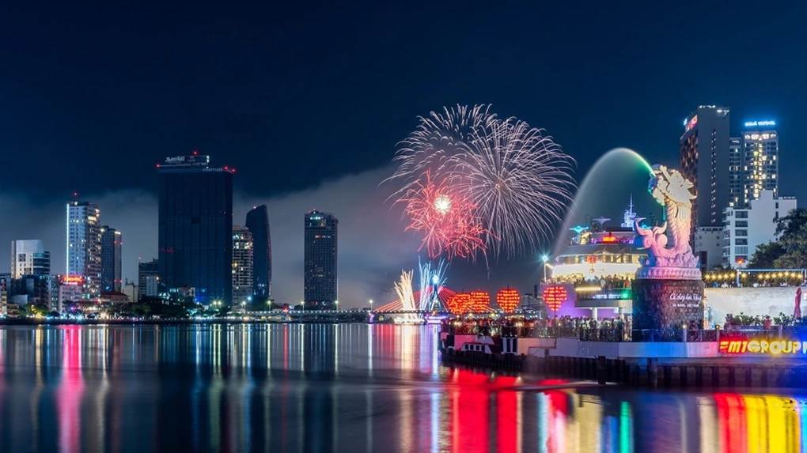
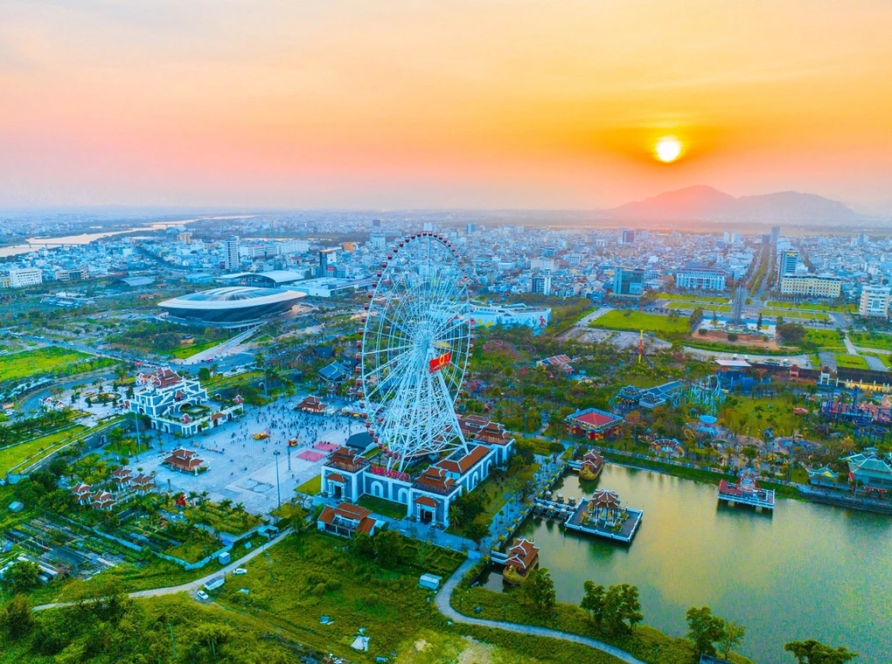
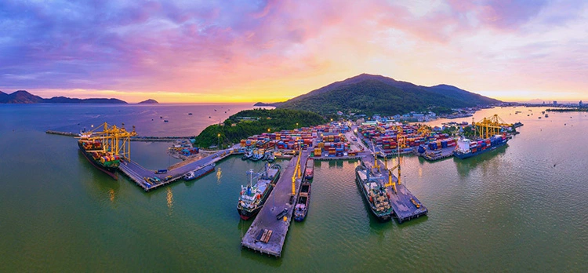

Giới thiệu về du lịch Đà Nẵng
Thành phố đáng sống nhất VN
ĐN được xem là thành phố xinh đẹp mà bất kỳ ai cũng phải đến trong đời. Để trả lời cho những câu hỏi trải nghiệm Đà Nẵng đi đâu? Giá vé du lịch tại Đà Nẵng là bao nhiêu?
Các hình ảnh nổi bật


CÔNG VIÊN CHÂU Á
Đà nẵng, ngày 15/06/2023
Vị trí: số 1 đường Phan Đăng Lưu, Hòa Cường Bắc, Hải Châu
Công viên châu á sở hữu hàng trăm trò chơi mạo hiểm đa dạng. Địa điểm du lịch tự túc ở Đà Nẵng nổi tiếng thu hút lượng khách du lịch tham quan hằng năm. Tại đây có rất nhiều trò chơi mạo hiểm như: tàu lượn siêu tốc, tháp rơi tự do,...Hoặc các trò chơi dành cho các em nhỏ như: đu quay,...Đặc biệt vòng quay mặt trời sun wheel
HẢI ĐĂNG TIÊN SA
Đà nẵng, ngày 16/06/2023
Vị trí: Thọ Quang, Sơn Trà, Đà Nẵng
Hải Đăng Tiên Sa hay còn gọi là Hải Đăng Sơn Trà, là địa điểm do Pháp xây dựng và chính thức đưa vào hoạt động năm 1902